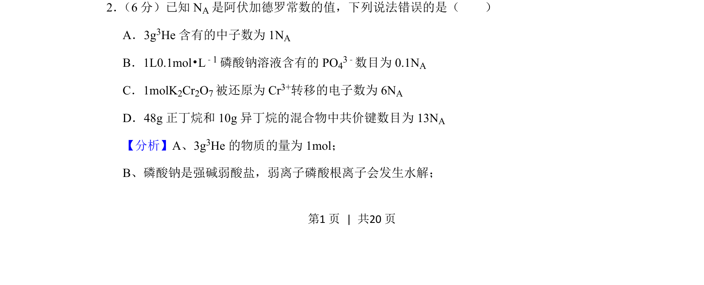
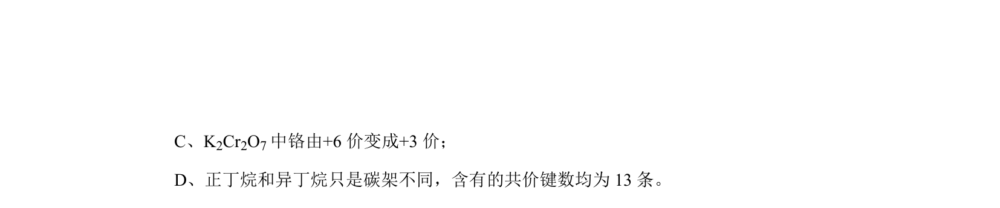
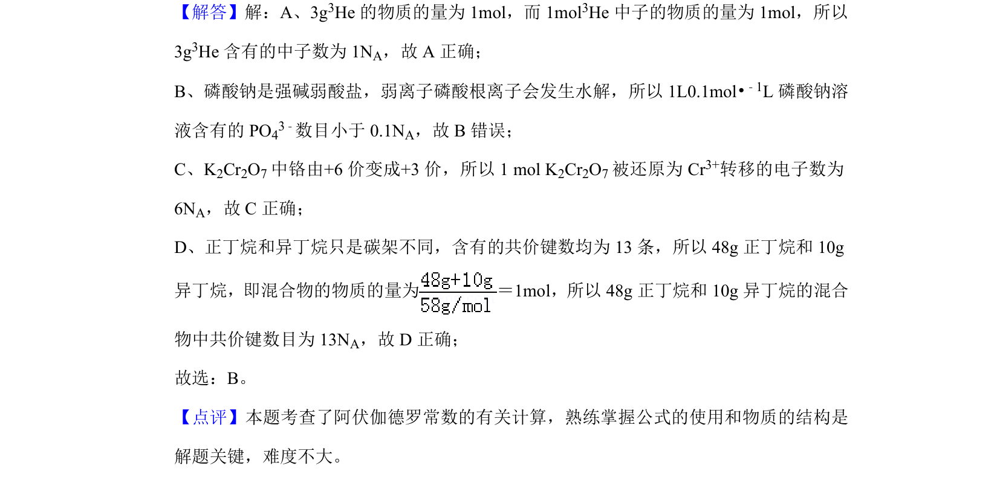

考点：阿伏加德罗常数 物质的量 盐类水解 氧化还原反应


该题考查阿伏加德罗常数、物质的量及微粒数目的判断，涉及盐类水解和氧化还原计算。

📄 原 PDF 第 1 页：
素材/真题/吉林/2008-2024·（吉林）化学高考真题/2019年高考化学试卷（新课标Ⅱ）（解析卷）.pdf
2． （6分）已知NA是阿伏加德罗常数的值，下列说法错误的是（ ） A．3g3He含有的中子数为1N A B．1L0.1mol•L﹣1磷酸钠溶液含有的PO 43﹣数目为0.1N A C．1molK2Cr2O7被还原为Cr 3+转移的电子数为6N A D．48g正丁烷和10g异丁烷的混合物中共价键数目为13N A
【分析】A、3g3He的物质的量为1mol； B、磷酸钠是强碱弱酸盐，弱离子磷酸根离子会发生水解；